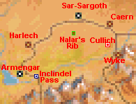
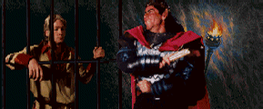
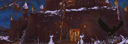
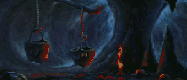
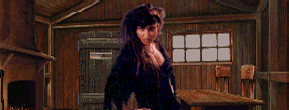

Marked for Death
| Betrayal at Krondor - Chapter 4 Marked for Death |
|
|
||
|
Gorath & Owyn must escape from the Northlands | ||||
|
[HOME]
| ||||
|  |
Gorath and Owyn find themselves jailed in a Dungeon deep below Delekhan's
palace. After they've made their way from the Lower to the Upper Level of
the Dungeon, they finally exit near Sar-Sargoth. Now they'll have to make
their way towards the INCLINDEL BRIDGE, which is the only possible way out.
If you think this sounds simple, you are quite mistaken. |
|||
| WALKTHROUGH Chapter 4 |
 |
PLEASE NOTE: It is quite possible to finish this Chapter without activating Nalar's
Rib. The Webmaster is sure of this, because he did so the first time he played the
game (totally unaware of the existence of the Rib). This involves staying away from
the Main Road as much as possible. The Webmaster is also pretty sure that the Chapter
can be finished without talking to Irmelyn, rescuing Obkhar, finding Cullich, and talking
to Moraeulf. The Inclindel Bridge can be crossed without the Password if you're willing
to fight the Bridge Guards, but if you do this, you are going to miss a lot of the STORY.
Gorath & Owyn miraculously escape from their prison. Go East, into the Central Chamber,
find the two Chests containing their belongings (minus all the money!), and make sure
you search two dead Bodies. One of them has Rope and Picklocks, without which you will
never get out of here.
The way out is via the South Door. This can only be opened with the Interdictor Key,
which you'll find in the Eastern Sector of the Dungeon. The East Door, however, can
You can also fight four Goblins [Combat 07] in this Sector,
if you want to reach the CANE Chest. It's hardly worth it.
This is a small, and fairly straightforward level, as long as you look out for the
Pits! If you want to get out of here, there are four unavoidable Combats:
Two Moredhel Warriors and a Witch Hag [Combat 04]
You can also fight two Moredhel Warriors, a Sentinel Ogre, and a Witch Hag
[Combat 03], but you won't need to do so unless you insist on accessing the
ALPHABET Chest (the contents of which are disappointing). The ECHO Chest, however, can be found without any extra
Combats.
Here is the recommended procedure for finishing Chapter 4:
 [MAIN MAP]
[MAIN MAP]
 [CENTRAL NORTH MAP]
[CENTRAL NORTH MAP]
 only be opened with a Guildis Thorn (or Picklocks with Skill higher than 80). If you
need a Guildis Thorn, you'll have to enter the North Central Sector via
the North Door, which opens easily with Picklocks. You'll find the Guildis Thorn (and some more Rope)
in a Chest in this Sector, but first you'll have to fight a Witch Hag
[Combat 03], and two Goblins [Combat 02].
Back in the Central Chamber, exit via the East Door.
only be opened with a Guildis Thorn (or Picklocks with Skill higher than 80). If you
need a Guildis Thorn, you'll have to enter the North Central Sector via
the North Door, which opens easily with Picklocks. You'll find the Guildis Thorn (and some more Rope)
in a Chest in this Sector, but first you'll have to fight a Witch Hag
[Combat 03], and two Goblins [Combat 02].
Back in the Central Chamber, exit via the East Door. It will probably explode in your face (unless you cast SCENT OF SARIG and your Lockpicking
Skill is 83 or higher), but the Damage is slight (25), and the contents well worth your
wounds. This is your only possibility of finding the EVIL SEEK Spell. This Spell is
extremely valuable to Owyn, and essential in order to get out of the Dungeon (and finish
this Chapter).
It will probably explode in your face (unless you cast SCENT OF SARIG and your Lockpicking
Skill is 83 or higher), but the Damage is slight (25), and the contents well worth your
wounds. This is your only possibility of finding the EVIL SEEK Spell. This Spell is
extremely valuable to Owyn, and essential in order to get out of the Dungeon (and finish
this Chapter). [SOUTH-EAST SECTOR MAP]
[SOUTH-EAST SECTOR MAP] [NORTH-EAST SECTOR MAP]
[NORTH-EAST SECTOR MAP]
Four Moredhel Warriors [Combat 01]
Three Moredhel Warriors and a Sentinel Ogre [Combat 02]
Two Moredhel Warriors, and three Sentinel Ogres [Combat 05]

|
If you are playing the Free Download Version (or a copy of this), please note that it contains the infamous NORTHLANDS BUG. This bug will cause the game to freeze when you click some Houses, a Well, and most annoyingly, NALAR'S RIB. You can easily bypass this bug by TURNING OFF THE GAME'S SOUND AND MUSIC in the Preferences Menu. It is quite safe to play with the sound on most of the time, if you remember to Bookmark or Save the game before you CLICK anything. Also keep in mind that a small portion of Chapter 5 takes place in the Raglam area in the Northlands, and this bug may also manifest there. You can download a patched version of the game from the NETCOMBAT site (see the front page of the BAK Help Web, where you can also download the Patch).
|
South of Sar-Sargoth you will soon meet three Moredhel Warriors and a Witch Hag [Combat 14]. Look out for the PADDLE Chest and a Locked Chest nearby. A very special Graveyard can also be located in this area. A few steps to the South will trigger a meeting with four Moredhel [Combat 13]. Approaching Nalar's Rib, you may run into three Highland Ogres caught in a Trap [Combat 35]. The Trap is easy, after you've killed the Ogres. Close to the Rib, be prepared to fight four Moredhel Warriors [Combat 15].In the Sar-Sargoth area, you will come across a lot of dead Deer (yielding Rations, some Spoiled), Tree Stumps (containing Items), and Bushes (yielding Restoratives, Rations and Poisoned Rations). Going West and South (towards Harlech and Armengar) you can enter two Combats:
Two Highland Ogres and three Tor Giants [Combat 24]. This combat is extremely difficult, so try to avoid it.
Two Moredhel, two Goblins and a Witch Hag [Combat 25].
West of Combat 25 you can obtain UNFORTUNATE FLUX if you drink from a Magical Well, and then enter a nearby Tent. East of the same Combat you can locate the EGGS Chest, the FIRE Chest, a Locked Chest, and a Tent. The EGGS Chest holds the NIGHTFINGERS Scroll.
HARLECH Until Owyn has found AND THE LIGHT SHALL LIE you should stay away from Harlech and the endless Combats surrounding it. There is, however, an area East of Harlech which can be explored. You will find a Tree Stump, a Tent, some Mounds of Dirt, four Chests, and a Trap with two Goblins and a Moredhel [Combat 36]. Don't miss the Temple of Guiswa south of Harlech. Farther South, on the Road towards Armengar you will encounter three Moredhel and two Goblins [Combat 29]. The NOOSE Chest will be found nearby.
MAP OF HARLECH AREA
ARMENGAR
North of Armengar you will definitely run into two Goblins and a Moredhel Warrior [Combat 30], and probably a group of five Goblins as well [Combat 31]. Don't miss the Trapped Chest close to the latter Combat, but be careful - you need Lockpicking Skill of 78% or higher in order to deactivate it, and if it explodes, it causes MASSIVE damage (180). If you succeed, it will yield Bane of the Black Slayers, Nightfingers, Skin of the Dragon, and the seldom seen Glory Hand.
The area around Armengar is a veritable forest of Bushes containing Restoratives. If you're good at spotting them you can collect well over 100 of these. Notice the Graveyard East of Armengar. None of the graves contain anything, but lovers of Feist's books won't need to be told whose "first love" Bronwynn Alpress was!
 Before entering either Shop or Tavern, click the hotspot to the left of the Tower, and enter the Naphtha Caverns. You can get Naphtha [30] here. Don't re-click the righmost cache - Gorath will get sick from the fumes.
Now enter the Giant's Broth Tavern, talk to Irmelyn, and agree to rescue Obkhar from the Naphtha Mines. After rescuing Obkhar you should return in order to pick up your reward, and get more information (about Witch Cullich).
The NAPHTHA MINES are on the east side of the river, directly to the east of Armengar (go North, East, South and cross the bridge). There's a trap on the other side of the bridge, but it's easy: Use the Solid Crystal to clog the leftmost Blaster, then sneak behind the other two Blasters. Get imprisoned by Venutrier, and enter the Mines.
The air in the Mines is thick with Naphtha fumes, so don't light a Torch! If you do, the whole place will explode. Your quest here is to find the three Vapor Masks, then find Obkhar and give him one, and finally escape by jumping into the river that runs through the Mines. You will have to fight three Goblins [Combat 01], two Goblins [Combat 03], and three Goblins [Combat 04]. You can also fight a Hatchling Wyvern [Combat 02], and a lone Witch Hag [Combat 05]. The three Masks will be found in a Locked Chest, which needs a Noble's Passkey (or Lockpicking Skill 71% or higher) to be opened. In the unlikely case that you don't have a Noble's Passkey, you can get one from the Trapped Chest in the Witch Hag's chamber. You'll need 44% or higher Lockpicking Skill in order to deactivate the Trap, but the Damage is "only" 40. Once you have the three Masks, make sure both Owyn and Gorath have Masks, and give the third one to Obkhar. Then locate the river, and jump in!
Now return to Armengar, collect your reward (200 Gold) from Irmelyn, and find out where the Witch Cullich can be found. If you decide to visit her, you must retrace your path and go to the area EAST of Sar-Sargoth (Caern Sector). Before you do this, you should explore the area South of Armengar. There's an easy Combat here with two Goblins and a Moredhel Warrior [Combat 32]. Note the South-Western Path off the Main Road. This leads to a shop, Children of the Green Heart, which gives excellent prices for saleable Items. There are quite a few Rations Bushes around this Shop, but leave them alone - they are all Poisoned. Back on the Main Road, you will soon reach the Inclindel Bridge. This is guarded by three Moredhel Warriors and two Highland Ogres [Combat 33]. They will demand a Password. In order to get the Password you must talk to Moraeulf in Harlech. But you won't be able to enter Harlech, unless you talk to Cullich first! (You can, of course, choose to fight the Bridge Guards. If you manage to defeat them, you'll have to fight another Combat South of the Bridge, and then you are only a few steps away from the end of this Chapter. A visit to Cullich is strongly recommended, though - she can raise Owyn's Casting Accuracy.)
VISIT CULLICH
Your search for Cullich will lead to the Caern Sector, East of Sar-Sargoth. Cullich's House is not easily found, so please consult the Map (above). Assuming you've activated Nalar's Rib earlier, most of the Enemies here will be dead [Combats 05 - 12]. Once in this Sector, you will certainly want to explore the area. The Village of Caern is not very interesting, but it does have a Shop. Feel free to check the Houses - Gorath will meet a friend in one of these. The Caern Graveyard won't yield any Items. There are various Mounds of Dirt, Houses, Tree Stumps, and Tents to be found here. Look out for a group of four Tents South of Caern. They are guarded by four Goblins and an Highland Ogre [Combat 04], but one of the Tents contains the extremely rare WRATH OF KILLIAN Spell. The Eastern Bridge can NOT be crossed, but if you approach it via the Main Road you will run into two Tor Giants and a Witch Hag [Combat 01]. Note the South Road just West of the Eastern Bridge. Two Moredhel, an Highland Ogre, and a Witch Hag await you here [Combat 02]. Cullich's House is located directly West of this Combat.
Two Goblins and two Moredhel Warriors [Combat 03] will attack you if you try to enter Cullich's House. After you've killed them you're in for a surprise:
Gorath has a wife, and she's a Witch! She's not exactly friendly towards her estranged husband, but will give him loads of information. She can also raise Owyn's Casting Skill by 15 points, and teach him AND THE LIGHT SHALL LIE for a price of 80 Gold Sovereigns. This Spell is essential - you will not be able to enter Harlech and speak to Moraeulf without it. She can also teach Owyn UNFORTUNATE FLUX for 300 Gold Sovereigns, but Owyn probably already knows this Spell.
Important Tip: If you make sure Owyn's CASTING SKILL (only) is SELECTED before he enters Cullich's House, he will gain 22 points (instead of 15)!
MAP OF WYKE AREA Before you leave this area, you can go South and visit Wyke village. There are no Combats here, and the area is rather disappointing. The Trap is silly (just sneak behind the Left Blaster). Note, however, that you can find the FETTERS OF RIME Scroll here, in the unlikely case that you don't already have it. Owyn really wants to know this Spell. There's a Shop here as well.
Return West, and go to Harlech in order to get the Password from Moraeulf. (Note that Moraeulf won't supply the Password, unless you've talked to the Inclindel Bridge Guards first, and realized that a Password is needed.) As soon as you spot the first group of Enemies surrounding Harlech, make Owyn cast AND THE LIGHT SHALL LIE. The Enemies won't attack, because they think Owyn is a Moredhel. But beware! The Spell only lasts TWO HOURS (30 Large Steps, 60 Medium Steps, 120 Small Steps), so you will almost certainly need to re-cast it regularly. Moraeulf will give you the Password.
Now go South, to the Inclindel Bridge, and the Guards will allow you to cross. A Combat awaits you South of the Bridge, three Moredhel Warriors and two Goblins [Combat 34]. Soon you will meet Finn, who will end this Chapter by taking Gorath and Owyn to meet Arutha in Krondor. END OF CHAPTER.
FOOTNOTE: After Combat 34 (South of the Bridge) Gorath & Owyn will be facing East. If you now use the Spyglass (or EYES OF ISHAP), you will spot some possible Caches: two Trapped Chests in a valley directly to the East, and two Tents near the riverbank to the North (possibly only in Version 1.01). You may find it difficult to reach these, because FINN tends to pop up and finish the Chapter.
In order to access the two Trapped Chests, step right across the dead Enemies and enter the Eastern valley, where you will find the Chests hidden among the trees.
The two Tents are apparently impossible to reach. Any attempt to approach them will trigger the dialogue with FINN. There's a way, though, and the Webmaster is grateful to David Bruce for showing him how. All you need is DRAGON'S BREATH. Cast it as soon as you spot the Enemies South of the Bridge. When you get off the bridge, turn left and head northwards along the river. Disappointingly the two TENTS are quite empty, but at least you've avoided the Combat!